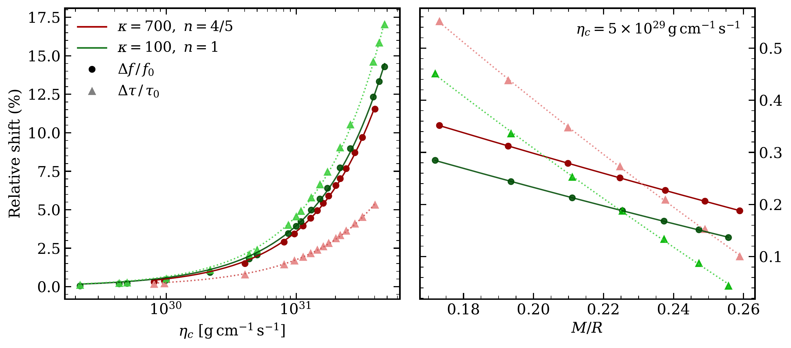
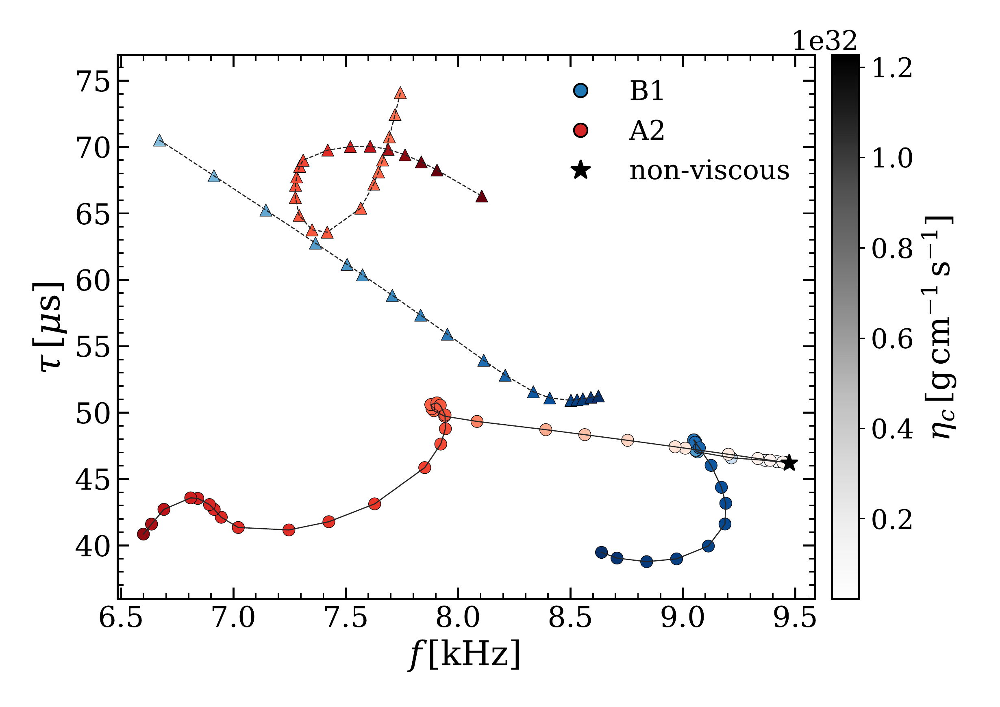
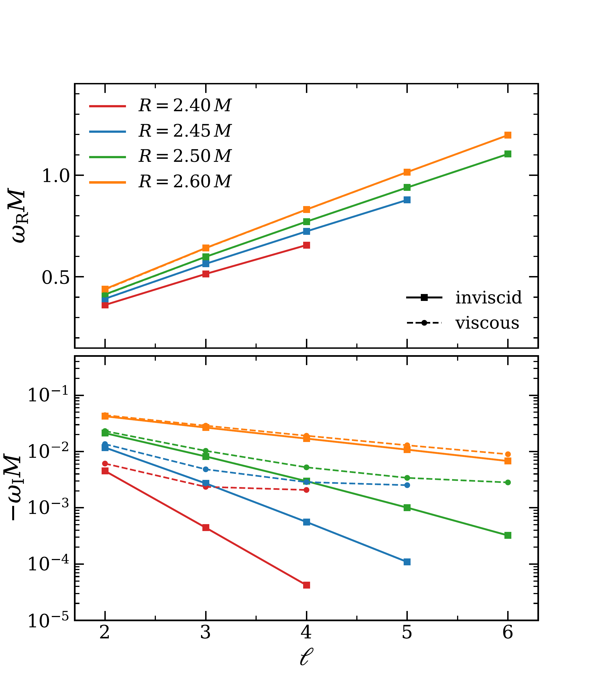

Paper overview
The oscillation modes of neutron stars are a window into matter at supranuclear densities, but the role of viscosity in these modes has so far been understood only loosely, for lack of a well-posed framework. This work uses a causal and stable formulation of relativistic viscous hydrodynamics to compute the axial oscillation spectrum of viscous neutron stars. It quantifies how shear viscosity modifies the familiar spacetime modes and uncovers a new family of viscosity-driven modes with no perfect-fluid counterpart.
Neutron stars are one of the few systems where all four fundamental interactions play a major role. Electromagnetic observations and gravitational-wave measurements of tidal deformability already constrain their equation of state, and third-generation detectors such as the Einstein Telescope and Cosmic Explorer are expected to resolve their oscillation spectrum in the post-merger signal of binary neutron-star coalescences.
Most models neglect out-of-equilibrium effects such as viscosity. This is reasonable for stars close to equilibrium, but a merger strongly perturbs that equilibrium. If hyperons or strange quarks are present in the remnant, weak-interaction processes can dramatically enhance the viscosity. High-precision gravitational-wave asteroseismology must therefore account for dissipation and, conversely, could one day measure the transport coefficients of dense matter.
The naive relativistic extension of Navier–Stokes, due to Landau and Lifshitz, propagates perturbations acausally and makes equilibrium states unstable. The paper instead adopts the Bemfica–Disconzi–Noronha–Kovtun (BDNK) framework, in which a suitable choice of hydrodynamic frame leads to well-posed equations while keeping only first gradients of the fluid variables. The stress-energy tensor reads
where $\eta$ is the shear viscosity, $\sigma_{ab}$ the shear tensor, and the terms $\mathcal{A}$, $\Pi$ and $\mathcal{Q}_a$ involve two additional transport coefficients, $\tau$ and $\theta$, that regulate causality. The paper tests four different hydrodynamic frames, built from two parametrizations of the transport coefficients, to check that its physical conclusions do not depend on this choice.
The shear viscosities considered are large, $\eta_c\sim10^{29}$–$10^{32}\,{\rm g\,cm^{-1}\,s^{-1}}$ at the centre of the star. Smaller values leave no observable effect, while bulk viscosities of order $10^{30}\,{\rm g\,cm^{-1}\,s^{-1}}$ are possible in cores containing strange matter, so the results serve as an estimate of the effect of a large transport coefficient.
The analysis focuses on axial, or odd-parity, perturbations of spherically symmetric stars. For a perfect fluid, the fluid velocity perturbation can be eliminated and the problem reduces to a single wave equation for the metric perturbation $\psi$. With viscosity, $\psi$ couples to the axial fluid velocity $Z$ through two coupled equations,
where $V$ is the Regge–Wheeler potential inside the star and the viscous "second sound" propagates at
Quasinormal modes are the complex frequencies for which a solution regular inside the star matches an outgoing solution outside it. The interior solution is integrated from the centre with a regularity condition at the surface, the exterior solution is built from a continued-fraction expansion, and the modes are found as the roots of their Wronskian. In the low-viscosity limit, the code reproduces known perfect-fluid results with sub-percent accuracy.
The first family studied are the $w$-modes, spacetime oscillations that exist already for a perfect fluid. Across all four hydrodynamic frames, their frequencies and damping times agree to better than one percent, strong evidence that the results are robust to the frame choice.
Viscosity lowers the oscillation frequency of the fundamental quadrupolar $w$-mode and lengthens its damping time. The shifts are at the percent level for $\eta_c\gtrsim10^{30}\,{\rm g\,cm^{-1}\,s^{-1}}$ and grow to $\sim10\%$ for the largest viscosities considered. Remarkably, the effect is larger for less compact stars, with the same slope for both equations of state,
where the constants $C_{f,\tau}$ depend on the equation of state. This is consistent with $w$-modes being spacetime oscillations, which are most sensitive to the compactness of the star.

In BDNK hydrodynamics, a new family of modes appears whose restoring force is provided by the viscous transport coefficients themselves. These $\eta$-modes have no analogue for a perfect fluid and, unlike the $w$-modes, depend on the choice of hydrodynamic frame. They oscillate at kHz frequencies with damping times comparable to those of the $w$-modes, and they appear to become undamped, ${\rm Im}\,\omega\to0$, as the viscosity vanishes.
As the viscosity increases, the $w$- and $\eta$-mode families approach each other in the complex plane but never cross, repelling each other instead. This mode avoidance, first described by von Neumann and Wigner and well known in asteroseismology and black-hole spectra, makes the spacetime modes very sensitive to the viscous transport coefficients in a small region of parameter space.

Finally, the paper turns to ultracompact constant-density stars, whose surface lies inside their own light ring. These objects have a stable light ring where gravitational waves can be trapped, giving rise to very long-lived modes that would produce echoes in the gravitational-wave signal and have been conjectured to trigger nonlinear instabilities. For a perfect fluid, these modes follow
so their damping decreases exponentially with $\ell$. With viscosity, the oscillation frequencies are essentially unchanged, but the damping no longer becomes exponentially small: it levels off at a rate set by the transport coefficients, regardless of $\ell$ and of the compactness. Shear viscosity therefore damps the long-lived trapped modes, and plays a crucial role in any putative nonlinear instability of ultracompact objects.

The paper provides the first systematic study of the axial spectrum of viscous neutron stars within a causal and stable relativistic framework:
Spacetime $w$-modes are only mildly affected, with frame-independent shifts that reach the ten-percent level only for very large viscosities. The new $\eta$-modes, with kHz frequencies and no perfect-fluid counterpart, can interact with the $w$-modes through avoided crossings. Understanding whether these modes are excited in realistic dynamical processes, and extending the analysis to the polar sector and to rotating stars, are natural next steps.